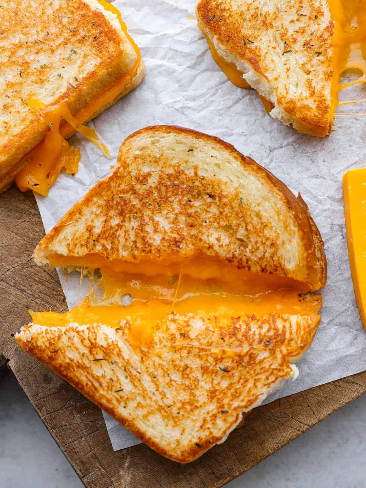

Grilled Cheese

Description
While not directly related to Alfredo, Grilled cheese is another delicacy that many non-degenerate Americans enjoy.
The ones who don't are the same ones that like pineapple on pizza.
Ingredientes
Steps for Preparation
- Take out two slices of bread
- Spread butter onto both bread slices, on both sides of each slice
- Place bread on skillet
- Let cook for 2-3 minutes
- Flip onto other side and let cook for additional 2 minutes
- Remove from skillet